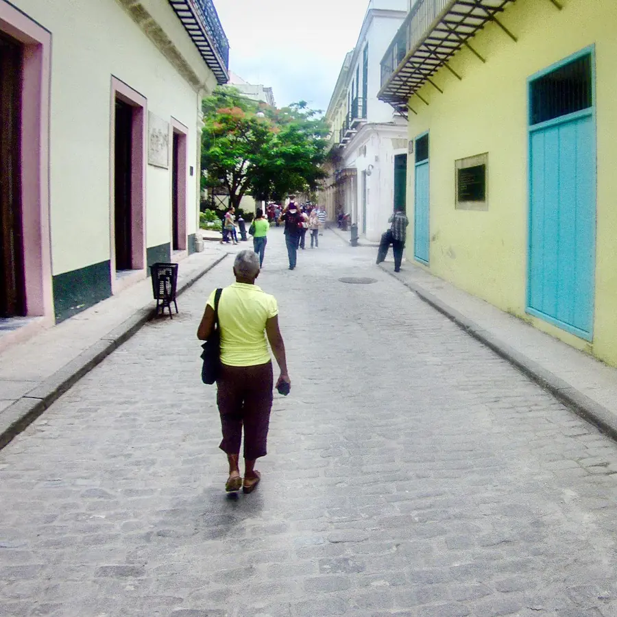

Sesión 1
Tu cámara y la luz
Entiendes cómo se forma una foto: apertura, velocidad e ISO. Conoces los modos de tu cámara o de tu celular, cómo enfocar y cómo usar la luz a tu favor.
Clases individuales con Sergio Lubezky. Con cualquier cámara, incluido tu celular. Tres sesiones a tu ritmo para empezar con bases sólidas.
Clases individuales y personalizadas con Sergio Lubezky para principiantes. Tres sesiones a tu ritmo para empezar con bases sólidas.
Compraste una cámara y casi nunca sales del modo automático. O quieres que las fotos de tu celular dejen de parecerse a todas las demás.
Si estás empezando y quieres hacerlo bien, estas clases son para ti. No necesitas saber nada de antemano.
Cada persona empieza desde un lugar distinto y quiere llegar a otro. Por eso las clases son individuales: antes de empezar platicamos de lo que quieres lograr, y las sesiones se ajustan a eso.
No hay jerarquías. Es una conversación entre dos personas que quieren hacer mejores fotos, y yo te acompaño.
Esta es la ruta base. Después de nuestra primera conversación la adapto a lo que tú quieres aprender.
Sesión 1
Entiendes cómo se forma una foto: apertura, velocidad e ISO. Conoces los modos de tu cámara o de tu celular, cómo enfocar y cómo usar la luz a tu favor.
Sesión 2
Aprendes a decidir qué entra en el encuadre y qué se queda fuera: líneas, fondos, ritmo y punto de vista. Con ejercicios para entrenar el ojo.
Sesión 3
Practicamos en la calle, contigo al mando. Después elegimos tus mejores fotos, las editamos de forma básica y definimos cómo seguir aprendiendo por tu cuenta.

Presencial en la zona de Santa Fe, Ciudad de México, o por Zoom. Tú eliges.
Soy Sergio Lubezky, fotógrafo mexicano. Mi obra se ha expuesto en México y en el extranjero, incluyendo galerías en Tokio y Nagoya, y fui de los primeros fotógrafos en el mundo en usar drones para hacer fotografía aérea.
Estudié de cerca con maestros de la fotografía mexicana como Pedro Meyer, Elsa Medina y Yvonne Venegas, y desde hace años acompaño a otros fotógrafos en México, Cuba y Colombia.
Creo que aprender fotografía no es acumular datos técnicos, sino aprender a mirar. Por eso doy clases individuales: platicamos de lo que quieres lograr y trabajamos a tu ritmo, de tú a tú.
Mi trabajo es multidisciplinario: además de la fotografía, he trabajado en estrategia, tecnología y medios. Conoce más de mi trabajo en lubezky.com.
Estas clases son el punto de partida. Si ya tienes bases y quieres desarrollar una mirada propia, en Coach de Foto ofrezco coaching para fotógrafos intermedios y avanzados, y viajes fotográficos en grupos pequeños.
No. Puedes tomar las clases con la cámara que tengas, incluido tu celular.
Escríbeme por WhatsApp y te cuento. Primero platicamos de lo que buscas.
Son tres sesiones de 1 hora 30 minutos cada una.
En la zona de Santa Fe, Ciudad de México, o por Zoom. Tú eliges la modalidad que te acomode mejor.
No. Si es la primera vez que usas una cámara, justo para eso son estas clases.
Las clases son individuales, y ahí está su valor. Si los dos están muy interesados en aprender, lo podemos platicar. Escríbeme y lo vemos.
Si quieres seguir, en coachdefoto.com ofrezco coaching para fotógrafos intermedios y avanzados, y viajes fotográficos en grupos pequeños.
Escríbeme por WhatsApp y platicamos de tus fotos, tu cámara y lo que quieres aprender.
Escríbeme por WhatsApp